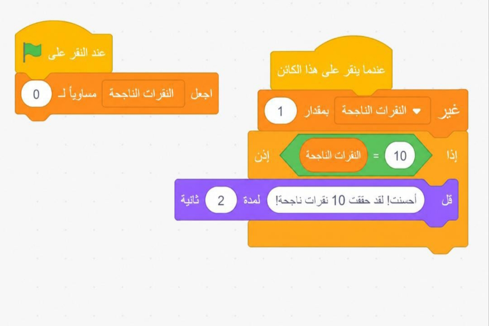
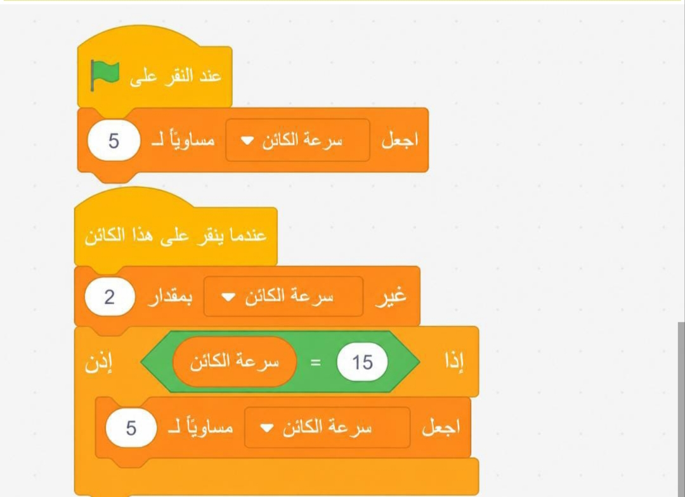
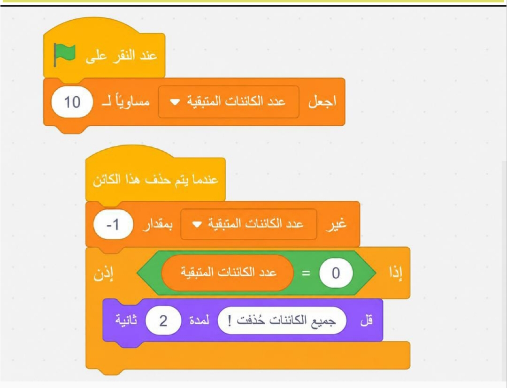

المعرفة
أوظف في هذا الدرس ما تعلمته من معارف في الإجابة عن الأسئلة الآتية:
- في نافذة اللبنات البرمجية أختار فئة المتغيرات (Variables)، ثم أنقر على زر «إنشاء متغير» (Make a Variable).
- أدخل اسمًا مناسبًا للمتغير، يعكس وظيفته بوضوح، مثل الحد الأقصى للنقاط.
- أختار «لجميع الكائنات» (For All Sprites) لجعل المتغير متاحًا لجميع الكائنات في المشروع.
- لإعطاء المتغير قيمة ابتدائية، أضيف لبنة «اجعل [اسم المتغير] مساويًا [قيمة]».
- أضع هذه اللبنة في بداية النص البرمجي (أسفل لبنة «عند النقر على العلم الأخضر»).
المتغيرات الثابتة (Constants):
قيم هذه المتغيرات لا تتغير في أثناء تشغيل المشروع، وتُستخدم لتخزين معلومات ثابتة. يساعد هذا النوع من المتغيرات في تخزين المعلومات التي نحتاجها في مختلف أجزاء البرنامج من دون الحاجة لتعديلها، مثل تخزين قيمة قصوى للنقاط، أو تخزين اسم اللعبة أو الرسائل الثابتة.
مثل تعريف متغير «الحد الأقصى للنقاط» يحتفظ بقيمة 100 لتحديد الفوز في اللعبة.
المتغيرات الديناميكية (Dynamic Variables):
هي نوع من المتغيرات يمكن تعديل قيمتها في أثناء تشغيل البرنامج؛ حيث تتغير بناءً على التفاعلات والأحداث التي تحدث خلال التنفيذ. هذا النوع يتميز بمرونته وقدرته على التحديث الديناميكي وفقًا لمنطق البرمجة.
أمثلة على استخدامات المتغيرات المتغيرة:
- تتبع النقاط في الألعاب: يتم تحديث النقاط عند تحقيق إنجاز معين أو مواجهة عقبة.
- حساب الوقت: تُستخدم لتسجيل الوقت المتبقي أو الزمن المستغرق لإتمام المهمة.
- إدارة المستويات: تتغير قيم المتغيرات للإشارة إلى مستوى اللعبة الحالي.
- متابعة الحالات: تُستخدم للإشارة إلى حالات معينة، مثل «تم النقر على الكائن» أو «اللعبة انتهت».
- أختار «لجميع الكائنات» إذا كان المتغير مشتركًا بين جميع الكائنات.
- أختار «لهذا الكائن فقط» إذا كان المتغير مخصصًا لكائن واحد.
أوظف مهارات التفكير الناقد والتواصل الرقمي والبحث الرقمي في الإجابة عن الأسئلة الآتية:
عند بداية اللعبة:
- أنشئ متغيرًا باسم «عدد المحاولات».
- اجعل قيمته = 5.
عند خسارة محاولة:
- غيّر «عدد المحاولات» بمقدار -1.
- قل «حاول مرة أخرى» لمدة ثانيتين.

- ابدأ.
- أنشئ متغيرًا باسم «الطاقة» = 100.
- أثناء اللعب، إذا لمس الكائن عائقًا:
- غيّر «الطاقة» بمقدار -10.
- تحقق إذا كانت الطاقة = 0:
- قل «اللعبة انتهت!».
- نوقف اللعبة.
- انتهى.

